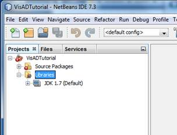

A Beginners Guide to Getting Started With VisAD and NetBeans
23rd March 2013
andy@andrewwilson.co.uk
working on Windows7 SP1 32-bit
A seven step guide aimed at first-time users of NetBeans attempting to compile and run Ugo Taddei’s VisAD tutorials. This will also be useful for anyone attempting to use NetBeans for the first time to work on some existing Java code and
application libraries.
Step 1: Download and Install NetBeans
Download the NetBeans IDE from
http://netbeans.org/downloads/
I downloaded the Java SE download bundle for NetBeans version 7.3
Step 2: Download VisAD
Download the file
ftp://ftp.ssec.wisc.edu/pub/visad-2.0/visad.jar
I saved this into C:\Programe Files\Java\VisAD\visad.jar
Step 3: Download and Unpack Ugo Taddei’s VisAD Tutorial
Download the file
http://www.ssec.wisc.edu/~billh/vistutor.jar
I then used the 7zip program, available from here,
http://sourceforge.net/projects/sevenzip/, to unpack this file into C:\Users\Andrew\VisAD\UgoTutorial
Step 4: Launch NetBeans and Create a New Project
Launch NetBeans and from the main menu select File > New Project. In the New Project dialog choose a project category of Java Project with Existing Sources
I chose to call my new project VisADTutorial
Then I selected the folder where I had extracted the source code for the tutorial examples. The tutorials are pre-compiled and the .class files are in the same directories. NetBeans will offer to delete these and recompile – accept this
option to delete.

Step 6: Tell NetBeans Where to Find the VisAD Library
We now have a new NetBeans project but it won’t compile because it can’t find the VisAD classes. In the NetBeans Project tree right click on the Libraries folder and select Add JAR/Folder. Navigate to wherever you saved the visad.jar file
from step 2 and then select it.

Step 7: Compile and Run The Tutorials
In the the NetBeans Project tree in the Source Packages folder browse to find the java source file for the tutorial that you want to run, right click on it and select run. NetBeans will compile and run the program.